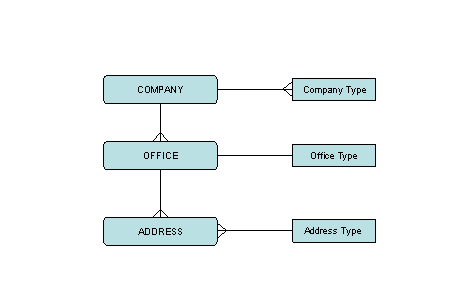

The Company Information Workbench is a database of all the companies you deal with; for example:
NOTE
Different modules have different versions of the CIW, which reflect the different needs. For example:
Company types allow you to identify different types of company and your relationship with them. Each company in the Company Information Workbench belongs to one or more company type. For example, a company could be a
Each company in the Company Information Workbench has one or more offices (for example, head office, regional offices and so on). When you create a new company record, this automatically creates an office record:
After that, you can add other offices that belong to the same company.
Office types allow you to identify different types of office; for example: head office, regional office. Each office has one type only. You must also define which office type you are using as a head office, using the CI parameter HOTYPE.
Each office can have many addresses - for example, a postal address, an address for deliveries, an address to which invoices should be sent, and so on. Address types identify the different types of address.
There are specific address types for
